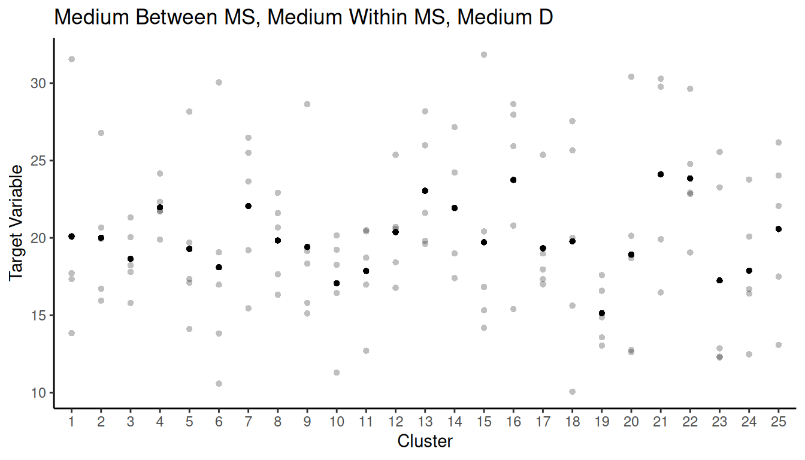

Wednesday, Oct 9
You can also download a PDF copy of this lecture.
Estimators of \(\tau\)
Recall for a cluster sampling design \(\tau\) is \[ \tau = \sum_{i=1}^N y_i, \] where \[ y_i = \sum_{j=1}^{m_i} y_{ij} \] is the total of the target variable over the elements in the \(i\)-th cluster. Assuming simple random sampling of clusters, there are two estimators of \(\tau\) we might use: the “ratio estimator” and the “unbiased estimator”.
The “Ratio Estimator”
Recall that the estimator of \(\mu\) is \[ \hat\mu = \frac{\sum_{i \in \mathcal{S}} y_i}{\sum_{i \in \mathcal{S}} m_i}. \] Since \(\tau = M\mu\) we might multiply this estimator by \(M\) to get an estimator of \(\tau\): \[ \hat\tau = M\frac{\sum_{i \in \mathcal{S}} y_i}{\sum_{i \in \mathcal{S}} m_i}. \] Note that we can also write this as \[ \hat\tau = M\frac{\bar{y}}{\bar{m}}, \] where \(\bar{y} = \frac{1}{n}\sum_{i \in \mathcal{S}} y_i\) and \(\bar{m} = \frac{1}{n}\sum_{i \in \mathcal{S}} m_i\).
If we think of the clusters as elements and \(y_i\) as the target variable then this is effectively a ratio estimator for simple random sampling (of clusters). What then is the auxiliary variable?
Example: A cluster sampling design selects \(n\) = 3 boxes using simple random sampling. The number of widgets in these boxes are \(m_1\) = 3, \(m_2\) = 4, and \(m_3\) = 5. The total weight of the widgets in these boxes are \(y_1\) = 6.2, \(y_2\) = 7.5, and \(y_3\) = 10.3. Assume that the population of 425 widgets is contained in 100 boxes. What is the estimate of \(\tau\) using this estimator?
Since \(\hat\tau = M\hat\mu\), the estimated variance of \(\hat\tau\) can be derived by multiplying the estimated variance of \(\hat\mu\) by \(M^2\) to get \[ \hat{V}(\hat\tau) = N^2\left(1 - \frac{n}{N}\right)\frac{s_r^2}{n} \ \ \ \text{where} \ \ \ s_r^2 = \frac{\sum_{i \in \mathcal{S}}(y_i-\hat\mu m_i)^2}{n-1}, \] and \(\hat\mu = \left. \sum_{i \in \mathcal{S}} y_i \middle/ \sum_{i \in \mathcal{S}} m_i \right.\) is the usual estimator of \(\mu\) for cluster sampling.
Example: For the example given earlier, what is the estimated variance of \(\hat\tau\) and the bound on the error of estimation?
The “Unbiased Estimator”
Recall that we discussed an alternative estimator of \(\mu\) under simple random sampling of clusters, \[ \hat\mu = \frac{\bar{y}}{\mu_m} \] where \[ \bar{y} = \frac{1}{n}\sum_{i \in \mathcal{S}} y_i \ \ \ \text{and} \ \ \ \mu_m = M/N. \] Since \(\tau = M\mu\) we might multiply this estimator by \(M\) to get an estimator of \(\tau\): \[ \hat\tau = \frac{N}{n}\sum_{i \in \mathcal{S}} y_i, \] which can also be written as \(\hat\tau = N\bar{y}\). If we think of the clusters as elements and \(y_i\) as the target variable, then this is effectively the traditional “expansion estimator” for simple random sampling.
Example: A cluster sampling design selects \(n\) = 3 boxes using simple random sampling. The number of widgets in these boxes are \(m_1\) = 3, \(m_2\) = 4, and \(m_3\) = 5. The total weight of the widgets in these boxes are \(y_1\) = 6.2, \(y_2\) = 7.5, and \(y_3\) = 10.3. Assume that the population of 425 widgets is contained in 100 boxes. What is the estimate of \(\tau\) using this estimator?
The estimated variance of this estimator is \[ \hat{V}(\hat\tau) = N^2\left(1 - \frac{n}{N}\right)\frac{s^2}{n} \ \ \ \text{where} \ \ \ s^2 = \frac{\sum_{i \in \mathcal{S}}(y_i - \bar{y})^2}{n-1}. \] Note that this can be derived simply by regarding the clusters as elements with target variable \(y_i\).
Example: For the example given earlier, what is the estimated variance of \(\hat\tau\) and the bound on the error of estimation?
Comparison of Two Estimators of \(\tau\)
So we have two estimators of \(\tau\) for a cluster sampling design when using a simple random sampling of clusters: \[ \hat\tau = M\frac{\sum_{i \in \mathcal{S}} y_i}{\sum_{i \in \mathcal{S}} m_i} \ \ \ \text{and} \ \ \ \hat\tau = \frac{N}{n}\sum_{i \in \mathcal{S}} y_i. \] The two estimators are equivalent if and only if all \(m_i\) are equal (in which case \(m_i = M/N\) for all clusters). What are the relative advantages and disadvantages of these two estimators?
Simulation Study
Consider three populations of \(M\) = 300 clustered elements. The populations differ with respect to variation in the cluster sizes.
Now suppose we simulate cluster sampling designs with simple random sampling of \(n\) = 25 clusters and compute the two estimators of \(\tau\).| Case | Estimator | Variance | B |
|---|---|---|---|
| A | Ratio Estimator | 149217.4 | 772.5733 |
| A | Unbiased Estimator | 149217.4 | 772.5733 |
| B | Ratio Estimator | 181495.5 | 852.0458 |
| B | Unbiased Estimator | 419719.0 | 1295.7145 |
| C | Ratio Estimator | 168526.7 | 821.0401 |
| C | Unbiased Estimator | 1394313.8 | 2361.6213 |
Design Effect of Cluster Sampling
Assume a cluster sampling design with \(N\) clusters, simple random sampling of clusters, and all clusters are of the same size so that all \(m_i = m = M/N\).
Define the mean square within clusters as \[ \sigma_w^2 = \frac{1}{N}\sum_{i=1}^N s_i^2, \] where \(s_i^2\) is the standard deviation of the target variable for all the elements in the \(i\)-th cluster.
Define the mean square between clusters as \[ \sigma_b^2 = \frac{m}{N-1}\sum_{i=1}^N(\bar{y}_i-\mu)^2, \] where \(\bar{y}_i\) is the mean of the target variable for all elements in the \(i\)-th cluster.
The total variance (i.e., the variance of the values of the target variable for all elements in the population) can be written as \[ \sigma^2 = \frac{(N-1)\sigma_b^2 + N(m-1)\sigma_w^2}{NM-1} = \frac{N-1}{NM-1}\sigma_b^2 + \frac{m-1}{NM-1}\sigma_w^2, \] so the total variance is a weighted average of \(\sigma_b^2\) and \(\sigma_w^2\), so for a given population an increase in one mean square must result in a decrease of the other (assuming a constant cluster size).
The design effect for the cluster sampling design is \[ D = \frac{V_C(\hat\mu)}{V_{\small \text{SRS}}(\hat\mu)} = \frac{\sigma_b^2}{\sigma^2}. \] Note that this is the same for \(\hat\tau\), and the two estimators of \(\hat\tau\) are equivalent if all clusters are the same size.
What does all this imply about how clustering affects the variance of \(\hat\mu\) or \(\hat\tau\)?

Example: The figure below shows a population of 400 elements. Assume that the darkness of the element is proportional to the target variable (i.e., darker elements have larger values of the target variable). Both cluster sampling and stratified sampling involve partitioning the elements into subsets (i.e., clusters or strata).
What would be a good way to partition the elements into clusters for a cluster sampling design so as to reduce the variance of an estimator of \(\mu\) or \(\tau\)?
What would be a good way to partition the elements into strata for a stratified sampling design so as to reduce the variance of an estimator of \(\mu\) or \(\tau\)?
Example: The figure below shows a population of 400 elements. The target variable is the number of objects in each element. Suppose we want to estimate \(\tau\) (i.e., the total number of objects) or \(\mu\) (i.e., the mean number of objects per unit area). Note that the number of objects tends to increase as we move west.
 Both cluster sampling and stratified sampling involve partitioning the
elements into subsets (i.e., clusters or strata).
Both cluster sampling and stratified sampling involve partitioning the
elements into subsets (i.e., clusters or strata).
What would be a good way to partition the elements into clusters for a cluster sampling design so as to reduce the variance of an estimator of \(\mu\) or \(\tau\)?
What would be a good way to partition the elements into strata for a stratified sampling design so as to reduce the variance of an estimator of \(\mu\) or \(\tau\)?